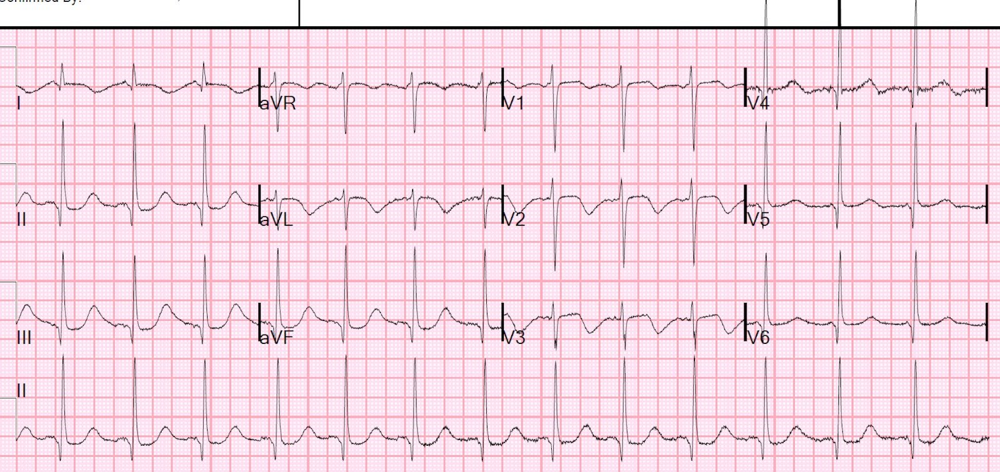
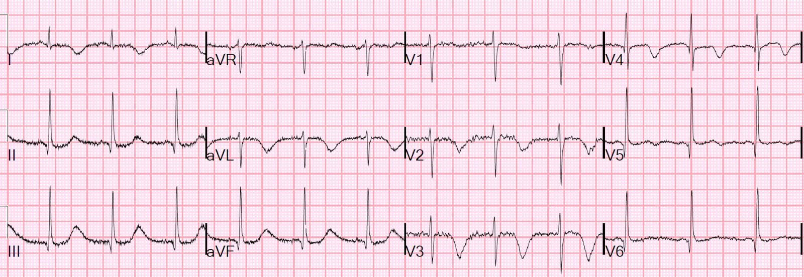
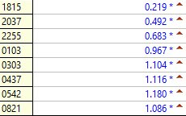
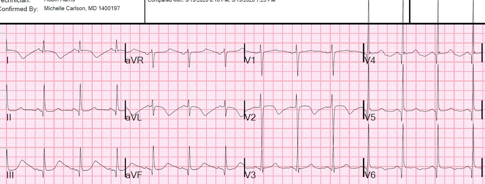
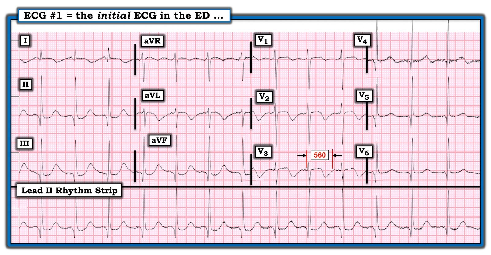
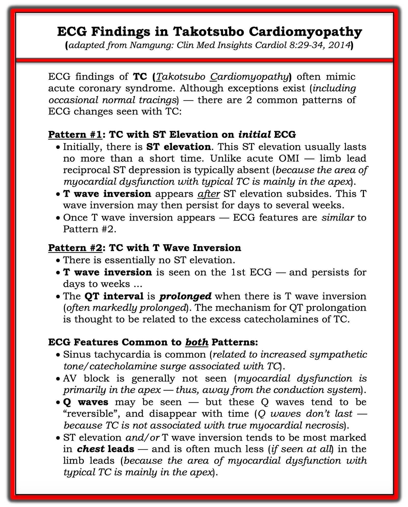
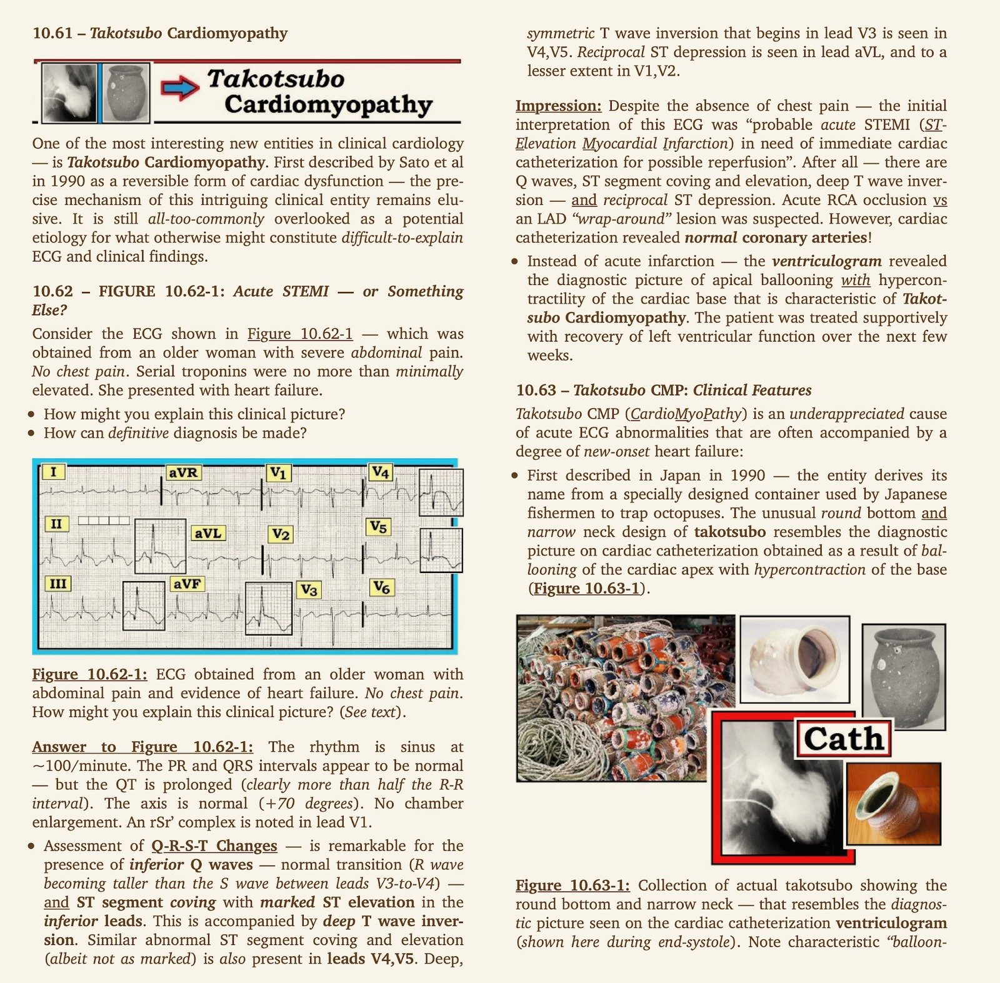
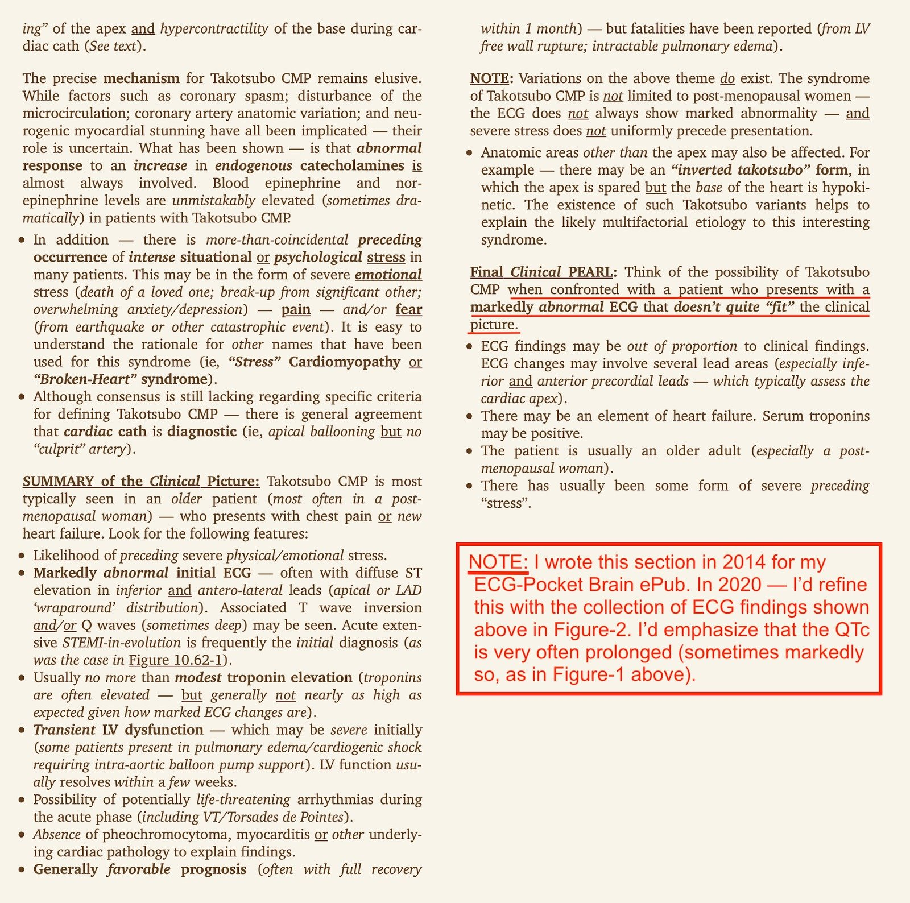
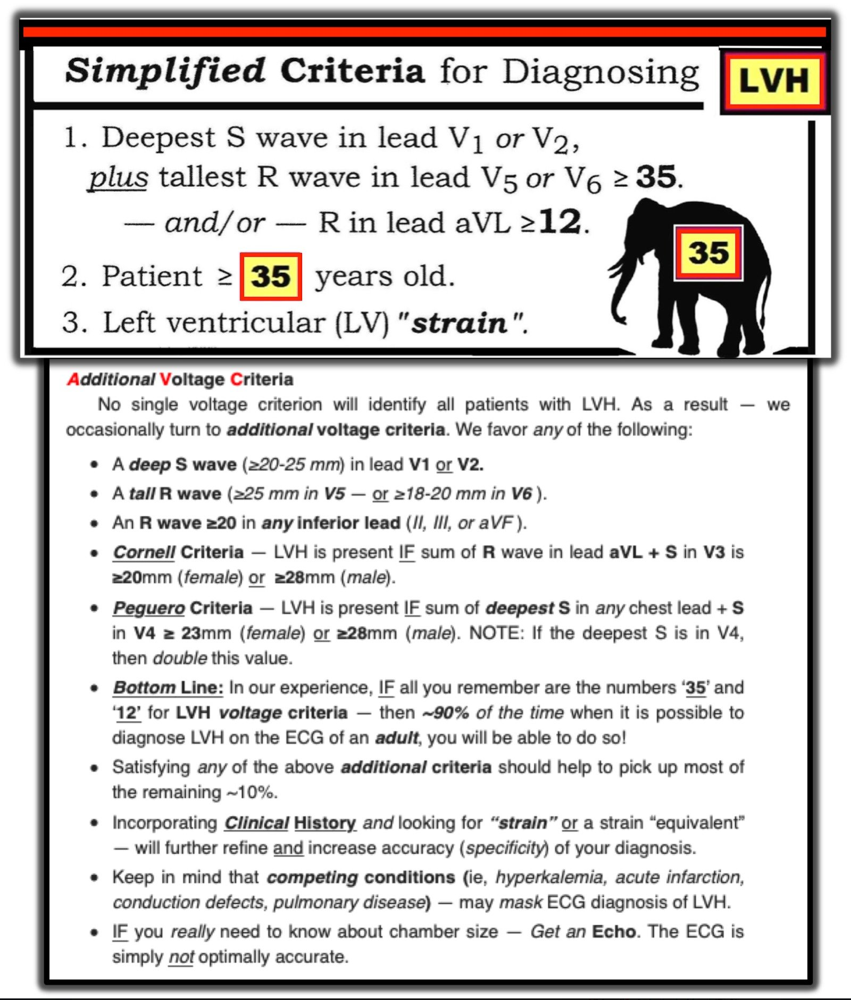

25/03/2020 — Một bệnh nhân đau bụng liên quan đến hội chứng cai rượu và nhiễm toan ceton do rượu
Bản dịch tiếng Việt của bài "A patient with abdominal pain associated with alcohol withdrawal and alcoholic ketoacidosis" – Dr. Smith’s ECG Blog. Giữ nguyên toàn bộ 12 hình ảnh và 2 video của bản gốc.
Trong lúc làm việc, một đồng nghiệp đã cho tôi xem điện tâm đồ này của một phụ nữ 50 mấy tuổi bị đau bụng liên quan đến hội chứng cai rượu (alcohol withdrawal) và nhiễm toan ceton do rượu (alcoholic ketoacidosis). Không ghi nhận đau ngực hay khó thở (SOB).


Tôi nói: “trông giống takotsubo. Điện giải có thể góp phần. Đã có kết quả chưa? (lúc đó chưa có). Tôi không nghĩ đây là một biến cố mạch vành.”
Anh ấy hỏi tại sao.
Tôi trả lời: “sóng T kỳ dị, với sóng T đảo ngược và QT cực kỳ dài. Máy tính đo QT là 506 ms, nhưng thực ra nó gần với 560-580 ms hơn, với QTc 600-620 ms. Hình ảnh này hoàn toàn không điển hình cho ACS nhưng rất điển hình cho takotsubo hay bệnh cơ tim do stress (stress cardiomyopathy).”
Vì vậy anh ấy đã làm siêu âm tim tại giường:
Đây là mặt cắt 4 buồng từ mỏm
Có thể thấy rõ là chỉ có phần đáy tim co bóp, còn mỏm tim thì phình ra như một chiếc bình bẫy bạch tuộc (octopus trap)
Đây là mặt cắt trục ngắn cạnh ức.
Thành trước nằm gần đầu dò nhất, và thành bên nằm ở bên phải.
Giảm chức năng tâm thu và rối loạn vận động thành trước và thành bên
Một lần siêu âm tim chính thức trước đó 1 năm cho thấy phân suất tống máu (EF) 68% và không có rối loạn vận động thành.
Hình ảnh “mỏm tim phình dạng bóng” (apical ballooning) ủng hộ takotsubo. Tuy nhiên, sự hiện diện của một rối loạn vận động thành tương ứng với vùng chi phối của một động mạch vành (LAD đoạn gần, ảnh hưởng thành trước và thành bên) là không điển hình, và đẩy nguyên nhân mạch vành lên cao hơn một chút trong chẩn đoán phân biệt.
Nếu là do mạch vành, thì động mạch đang thông (sóng T đảo ngược) và không cần kích hoạt phòng thông tim (cath lab).
Kết quả K là 3.2 mEq/L, Mg 1.4 mg/dL (bình thường 1.6-2.6), lactat 7.7 mmol/L và troponin I 0.219 ng/mL (giới hạn trên tham chiếu (URL) = 0.030 ng/mL)
Một điện tâm đồ khác được ghi 45 phút sau đó:


Đây là diễn biến troponin qua đêm:


Diễn biến này không phân biệt được nhồi máu cơ tim không do tắc (Non Occlusion MI) với takotsubo
Siêu âm tim chính thức được thực hiện vào buổi sáng:
Phân suất tống máu thất trái ước tính là 25%.
Giảm chức năng tâm thu thất trái mức độ nặng.
Rối loạn vận động thành khu trú: vách liên thất đoạn xa, thành trước và mỏm, trước bên, thành bên.
Nhiều khả năng là bệnh cơ tim do stress (rối loạn chức năng thất trái kiểu takotsubo).
Có dấu hiệu chắc chắn của rối loạn vận động thành khu trú rất rộng, với tổn thương thất trái theo từng đoạn phù hợp với bệnh cơ tim do stress kiểu takotsubo. TUY NHIÊN, chưa loại trừ được bệnh động mạch vành (CAD) tắc nghẽn như một nguyên nhân góp phần vào cơ chế rối loạn chức năng thất trái khu trú.
Và một điện tâm đồ theo dõi:


Máy tính đo QT là 498 ms, QTc 534.
Tôi đo được ít nhất 600 ms, có thể dài hơn, với QTc 635 ms
Làm thế nào để phân biệt ACS với takotsubo?
Có 2 kiểu biểu hiện điện tâm đồ chung trong takotsubo:
1. ST chênh lên, thường lan tỏa và không nằm trong vùng chi phối của một động mạch vành.
Với kiểu biểu hiện này, thường cần chụp mạch vành cấp cứu vì cái mà bạn nghĩ là takotsubo thường thực ra lại là STEMI/OMI. Những bệnh nhân bị tắc LAD "vòng qua mỏm" (wraparound, típ III), tức LAD vòng qua mỏm tim để chi phối cả thành dưới, sẽ có ST chênh lên lan tỏa và cũng có mỏm tim phình dạng bóng, khiến bạn có thể nghĩ đó là takotsubo.
Xem ca này:
Diffuse ST Elevation with Apical Ballooning: is it Takotsubo Stress Cardiomyopathy? (ST chênh lên lan tỏa kèm mỏm tim phình dạng bóng: có phải bệnh cơ tim do stress Takotsubo?)
Các ví dụ về takotsubo có ST chênh lên:
Chest pain, sinus tachycardia, and ST Elevation (Đau ngực, nhịp nhanh xoang và ST chênh lên)
COPD exacerbation, what do the ECG and bedside echo show? (Đợt cấp COPD, điện tâm đồ và siêu âm tim tại giường cho thấy gì?)
Two more Cases of Takotsubo Stress Cardiomyopathy (Thêm hai ca bệnh cơ tim do stress Takotsubo)
2. Sóng T đảo ngược kỳ dị, trong trường hợp này có thể là ACS nhưng không cần chụp mạch vành cấp cứu để chứng minh.
Xem các ca takotsubo có sóng T đảo ngược sau:
Bizarre T-wave inversions, with Negative U-waves and Very long QT. And a myocardial viability study. (Sóng T đảo ngược kỳ dị, kèm sóng U âm và QT rất dài. Và một nghiên cứu khả năng sống của cơ tim.)
A 60 year old patient with large T-wave inversions (Một bệnh nhân 60 tuổi có sóng T đảo ngược lớn)
Bizarre T-wave Inversions in a Patient without Chest Pain (Sóng T đảo ngược kỳ dị ở một bệnh nhân không đau ngực)
Kết cục:
Các bác sĩ tim mạch đã đủ tin rằng đây là takotsubo nên họ không chụp mạch vành.
____________________________________
Có thể phân biệt một cách đáng tin cậy ST chênh lên của takotsubo với ST chênh lên do tắc LAD hay không?
Đoạn trích dưới đây là từ một bài báo chúng tôi đã viết trên Can J Cardiol cách đây vài năm:
Các tác giả: David F. Miranda, M.D, Angie Lobo, M.D, Brooks Walsh, M.D, Yader Sandoval, M.D,
Stephen W. Smith, M.D. (đồng tác giả)
New Insights into the Use of the 12-lead Electrocardiogram for Diagnosing Acute Myocardial Infarction in the Emergency Department. (Những hiểu biết mới về việc sử dụng điện tâm đồ 12 chuyển đạo để chẩn đoán nhồi máu cơ tim cấp tại khoa cấp cứu.)
Canadian Journal of Cardiology 34(2):132; tháng Hai năm 2018. Số chuyên đề: Advances and Controversies in Cardiac Emergency Care (Những tiến bộ và tranh cãi trong chăm sóc cấp cứu tim mạch).
https://www.sciencedirect.com/science/article/pii/S0828282X1731173X (toàn văn bài báo trên ScienceDirect)
Bệnh cơ tim Takotsubo
Takotsubo có thể biểu hiện sóng T đảo ngược, nhưng cũng có thể có ST chênh lên (STE) giống STEMI. Mặc dù các nghiên cứu trước đây gợi ý rằng tiêu chuẩn điện tâm đồ có thể phân biệt STE này với STEMI thành trước,(57) y văn gần đây không ủng hộ kết quả này.(58 59) Mặc dù độ đặc hiệu của nhiều tổ hợp yếu tố điện tâm đồ khác nhau đối với takotsubo có thể lớn hơn 95%, giá trị tiên đoán dương có thể thấp tới 67% do tỷ lệ hiện mắc của takotsubo thấp. Nhiều ca STEMI thành trước, đặc biệt do LAD vòng qua mỏm tới thành dưới, có các dấu hiệu điện tâm đồ tương tự và cũng có mỏm tim phình dạng bóng.(60) Do đó, chụp mạch vành thường là thiết yếu để loại trừ tắc mạch vành cấp, ngay cả khi cả hình ảnh STE lẫn siêu âm tim đều gợi ý takotsubo.
57. Kosuge M, Ebina T, Hibi K, và cs. Simple and accurate electrocardiographic criteria to differentiate takotsubo cardiomyopathy from anterior acute myocardial infarction (Tiêu chuẩn điện tâm đồ đơn giản và chính xác để phân biệt bệnh cơ tim takotsubo với nhồi máu cơ tim cấp thành trước). Journal of the American College of Cardiology 2010;55:2514-6.
58. Frangieh AH, Obeid S, Ghadri JR, và cs. ECG Criteria to Differentiate Between Takotsubo (Stress) Cardiomyopathy and Myocardial Infarction (Tiêu chuẩn điện tâm đồ để phân biệt bệnh cơ tim Takotsubo (do stress) với nhồi máu cơ tim). Journal of the American Heart Association 2016;5.
59. Vervaat FE, Christensen TE, Smeijers L, và cs. Is it possible to differentiate between Takotsubo cardiomyopathy and acute anterior STEMI? (Có thể phân biệt bệnh cơ tim Takotsubo với STEMI thành trước cấp không?) J Electrocardiol 2015;48:512-9.
60. Mugnai G, Pasqualin G, Benfari G, và cs. Acute electrocardiographic differences between Takotsubo cardiomyopathy and anterior ST elevation myocardial infarction (Khác biệt điện tâm đồ giai đoạn cấp giữa bệnh cơ tim Takotsubo và nhồi máu cơ tim ST chênh lên thành trước). J Electrocardiol 2015;48:79-85.
Thư mục có chú giải (các đoạn trích liên quan từ phần tóm tắt)
STEMI so với takotsubo:
57. Kosuge và cs.:
“Việc không có sóng Q bất thường, không có thay đổi soi gương, có ST chênh lên ở chuyển đạo −aVR (tức là ST chênh xuống ở chuyển đạo aVR), và không có ST chênh lên ở chuyển đạo V1 xác định bệnh cơ tim takotsubo (TC) với độ nhạy lần lượt là 42%, 94%, 97% và 94%, độ đặc hiệu lần lượt là 74%, 49%, 75% và 71%, và độ chính xác dự đoán lần lượt là 71%, 53%, 77% và 73%.”
58. Frangieh và cs.:
“Khi so sánh STEMI với STE-TTC, ST chênh lên ở –aVR (ST chênh xuống ở aVR) là đặc trưng của STE-TTC với độ nhạy/độ đặc hiệu là 43% và 95%, giá trị tiên đoán dương (PPV) 91%, và giá trị tiên đoán âm (NPV) 62%. 0 .001= ST chênh xuống ở aVR đi kèm ST chênh lên ở các chuyển đạo dưới, độ nhạy/độ đặc hiệu là 14% và 98% (PPV là 89% và NPV 52%) (P=0.001), và 12% và 100% khi đi kèm ST chênh lên ở các chuyển đạo trước vách (PPV 100%, NPV 52%) (P nhỏ hơn 0 .001) Mặt khác, STEMI được đặc trưng bởi ST chênh lên ở aVR (độ nhạy/độ đặc hiệu là 31% và 95% P nhỏ hơn 0 .001.
59. Vervaat và cs. đã đánh giá các tiêu chuẩn trước đó:
“Tiêu chuẩn điện tâm đồ hiện có kém chính xác hơn (76%) so với trong nghiên cứu gốc (95%), với khác biệt lớn về độ nhạy (26% so với 91%). Chỉ có vectơ ST mặt phẳng trán 60° là phân biệt được có ý nghĩa TC với tất cả các phân nhóm STEMI thành trước cấp (p < 0.01) với độ chính xác chẩn đoán chung là 81%. Biên độ trung bình ở các chuyển đạo dưới II và aVF cao hơn có ý nghĩa ở bệnh nhân TC so với tất cả bệnh nhân STEMI thành trước cấp (lần lượt p < 0.01 và p < 0.05) và biên độ trung bình ở các chuyển đạo trước tim V1 và V2 thấp hơn có ý nghĩa so với tắc LAD đoạn gần và đoạn giữa (p < 0.01).”
60. Mugnai và cs.
“Việc không có sóng Q bất thường, ST chênh xuống ở aVR và không có ST chênh lên ở V1 có liên quan có ý nghĩa với TC (lần lượt: 52% so với 18%, p = 0.01; 47% so với 11%, p = 0.01; 80% so với 41%, p = 0.01). Tổ hợp các dấu hiệu điện tâm đồ này xác định TC với độ đặc hiệu 95% và giá trị tiên đoán dương 85.7%.”
ACS có sóng T đảo ngược so với takotsubo
Kosuge và cs. (Differences in Negative T Waves Between Takotsubo Cardiomyopathy and Reperfused Anterior Acute Myocardial Infarction — Khác biệt về sóng T âm giữa bệnh cơ tim Takotsubo và nhồi máu cơ tim cấp thành trước đã tái tưới máu) đã so sánh sóng T âm của takotsubo với sóng T âm của nhồi máu cơ tim thành trước và thấy rằng “sóng T âm ở chuyển đạo -aVR (tức là sóng T dương ở chuyển đạo aVR) và không có sóng T âm ở chuyển đạo V1 xác định takotsubo với độ nhạy 94% và độ đặc hiệu 95%.” Nói cách khác, takotsubo trong nghiên cứu này có sóng T dương ở cả aVR lẫn V1.

===================================
BÌNH LUẬN CỦA TÔI, bởi KEN GRAUER, MD (25/3/2020):
===================================
Một ca thú vị giúp ôn lại một khái niệm quan trọng trong đọc điện tâm đồ ở cấp cứu.
- Để rõ ràng — tôi trình bày điện tâm đồ ban đầu của ca này ở Hình 1.
- Điện tâm đồ #1 được ghi từ một phụ nữ 50 mấy tuổi bị đau bụng liên quan đến hội chứng cai rượu và nhiễm toan ceton do rượu. Không đau ngực hay khó thở.


Dr. Smith đã tóm tắt ngắn gọn các điểm MẤU CHỐT của điện tâm đồ #1:
- “Sóng T kỳ dị, với sóng T đảo ngược và QT cực kỳ dài. Máy tính đo QT là 506 msec — nhưng thực ra nó gần với 560-580 msec hơn, với QTc 600-620 msec.”
- Dr. Smith nói tiếp: “Hình ảnh này hoàn toàn không điển hình cho ACS — nhưng nó lại rất điển hình cho bệnh cơ tim Takotsubo hay bệnh cơ tim do stress.”
- Siêu âm tim tại giường sau đó đã xác nhận chẩn đoán này (Hình siêu âm tim do Dr. Smith trình bày ở trên).
SUY NGHĨ CỦA TÔI: Tôi hoàn toàn đồng ý với cách diễn giải điện tâm đồ #1 nêu trên của Dr. Smith. Để rõ ràng — tôi nghĩ cũng đáng dành chút thời gian để ghi nhận các dấu hiệu cụ thể trên điện tâm đồ #1:
- Nhịp nhiều khả năng nhất là nhịp xoang, tần số tim ~80 lần/phút (dù biên độ sóng P giảm, với hình dạng sóng P bất thường, có thể xuất phát từ một vị trí khác trong nhĩ). Về các khoảng — khoảng PR có lẽ bình thường (dù ở chuyển đạo II chỉ đo được vừa đúng 0,12 giây). Phức bộ QRS hẹp (tức là không quá 0,10 giây). Như Dr. Smith đã nêu — khoảng QT kéo dài rõ rệt! Tôi đo QT ở chuyển đạo V3 được ~560 ms — với tần số tim ~80 lần/phút, giá trị này tương ứng với QTc ~620 ms.
- Trục QRS trung bình trên mặt phẳng trán hơi đứng, khoảng +80 độ.
- Tiêu chuẩn điện thế của LVH được thỏa mãn ở nhiều chuyển đạo. Bao gồm: i) Sóng S sâu nhất ở V1,V2 + sóng R cao nhất ở V5,V6 ≥35 mm; ii) Sóng R ≥18 mm ở chuyển đạo V6; và, iii) Sóng R ≥20 mm ở bất kỳ chuyển đạo thành dưới nào (Xin xem Hình bổ sung A bên dưới để biết các tiêu chuẩn điện tâm đồ dễ dùng mà tôi ưa chuộng để chẩn đoán LVH).
- Sóng Q sâu xuất hiện ở nhiều chuyển đạo (tức là các chuyển đạo II, III, aVF; V4, V5, V6 — kèm một sóng Q nhỏ hơn ở chuyển đạo I).
- ST dạng vòm (coving) kèm chênh lên nhẹ — nối tiếp vào sóng T đảo ngược sâu, đối xứng — thấy ở các chuyển đạo bên cao I và aVL — và ở các chuyển đạo trước (đặc biệt ở chuyển đạo V2 và V3).
NHẬN ĐỊNH về điện tâm đồ #1: Như Dr. Smith đã nêu — nguyên nhân của các dấu hiệu điện tâm đồ trên bản ghi này có thể là đa yếu tố:
- Hạ kali máu và/hoặc hạ magnesi máu là những nguyên nhân thường gặp gây kéo dài QT (QU) — và cả hai nồng độ điện giải này đều thấp khi có kết quả (K+ huyết thanh = 3,2 mEq/L; Mg++ huyết thanh = 1,4 mg/dL ở bệnh nhân đang nhiễm toan này). Tuy vậy, việc QTc vẫn kéo dài cực độ trên điện tâm đồ theo dõi (vào thời điểm mà tình trạng điện giải huyết thanh và tình trạng nhiễm toan của bệnh nhân chắc chắn đã phải cải thiện) — cho chúng ta biết rằng các rối loạn chuyển hóa này có lẽ chỉ góp phần rất ít vào hình ảnh điện tâm đồ ban đầu này.
- Điện thế QRS lớn ở bệnh nhân có tiền sử lạm dụng rượu lâu năm này làm tăng khả năng bà đã có sẵn bệnh cơ tim do rượu từ trước — và rối loạn đó rõ ràng có thể góp phần vào một số bất thường ST-T thấy trên điện tâm đồ #1 (Đáng tiếc là không có điện tâm đồ nền để so sánh). Tuy vậy — QTc kéo dài rõ rệt, kèm ST dạng vòm và sóng T đảo ngược sâu ở các chuyển đạo trước bên, không phải là điều chúng ta chờ đợi chỉ riêng từ bệnh cơ tim do rượu.
- Thay vào đó (như Dr. Smith đã nêu) — bệnh sử của bệnh nhân bệnh cấp tính này, cùng bản ghi ban đầu thể hiện ở Hình 1, gợi ý nhiều nhất đến bệnh cơ tim Takotsubo.
THÚ NHẬN: Tôi thấy mình rất dễ quên mất bệnh cơ tim Takotsubo. Tôi để ý rằng cả những người hành nghề khác, kể cả người giàu kinh nghiệm, cũng có xu hướng bỏ sót rối loạn này. Với hy vọng đây sẽ là một lời nhắc hữu ích — tôi đã tóm tắt trong Hình 2 các dấu hiệu điện tâm đồ có thể gặp trong bệnh cơ tim Takotsubo (phỏng theo Namgung trên Clin Med Insights Cardiol). Điện tâm đồ ban đầu của ca này ( = điện tâm đồ #1) cho thấy nhiều đặc điểm trong số đó:
- Mặc dù có ST chênh lên nhẹ ở một số chuyển đạo trên điện tâm đồ #1 — bản ghi này còn có những dấu hiệu nổi bật hơn nhiều. Bao gồm: i) ST dạng vòm kèm sóng T đảo ngược sâu, đối xứng ở các chuyển đạo I, aVL — và ở các chuyển đạo V1, V2, V3; ii) Có QTc kéo dài rõ rệt (tức là QTc ~620 ms); và, iii) Sóng Q sâu xuất hiện ở nhiều chuyển đạo (có thể đã có từ lâu, vì biên độ QRS cũng tăng ở chính các chuyển đạo dưới-bên này — nhưng chúng ta không thể chắc chắn nếu không có điện tâm đồ cũ).


Cuối cùng, để ôn tập ngắn gọn — tôi đã bổ sung trong Hình 3 vài trang tóm tắt các đặc điểm lâm sàng của bệnh cơ tim Takotsubo. Lưu ý:
- Bệnh nhân trong ca này không phải là một phụ nữ cao tuổi — nhưng sự kết hợp giữa bệnh cấp tính với đau bụng, nhiễm toan ceton do rượu và hội chứng cai rượu rõ ràng là một tình huống dễ dẫn tới tăng catecholamine kéo dài mức độ nặng.
- Troponin tăng — dù không tăng nhiều như người ta có thể chờ đợi từ mức độ lan rộng của các bất thường điện tâm đồ.
- Tôi chưa có thông tin theo dõi lâm sàng về diễn tiến của bệnh nhân này (kể cả kết quả thông tim) vào thời điểm viết bình luận.
- ĐIỀU CỐT LÕI: Chúng ta cần nhớ cân nhắc bệnh cơ tim Takotsubo trong chẩn đoán phân biệt ở những ca như thế này. Xin CẢM ƠN Dr. Smith vì lời nhắc này!






